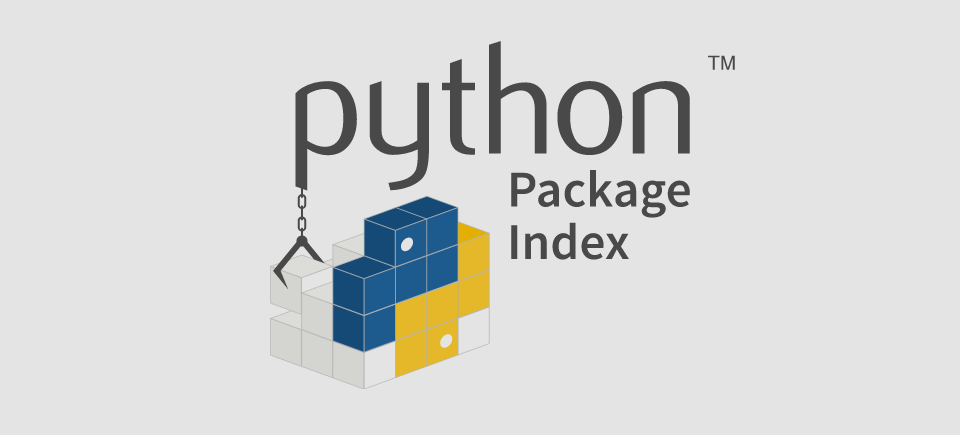

While The Python Language Reference describes the exact syntax and semantics of the Python language, this library reference manual describes the standard library that is distributed with Python. It also describes some of the optional components that are commonly included in Python distributions.
Python’s standard library is very extensive, offering a wide range of facilities as indicated by the long table of contents listed below. The library contains built-in modules (written in C) that provide access to system functionality such as file I/O that would otherwise be inaccessible to Python programmers, as well as modules written in Python that provide standardized solutions for many problems that occur in everyday programming. Some of these modules are explicitly designed to encourage and enhance the portability of Python programs by abstracting away platform-specifics into platform-neutral APIs.
The Python installers for the Windows platform usually include the entire standard library and often also include many additional components. For Unix-like operating systems Python is normally provided as a collection of packages, so it may be necessary to use the packaging tools provided with the operating system to obtain some or all of the optional components.
In addition to the standard library, there is a growing collection of several thousand components (from individual programs and modules to packages and entire application development frameworks), available from the Python Package Index.
- Introduction
- Built-in Functions
- Built-in Constants
- Built-in Types
- Truth Value Testing
- Boolean Operations —
and,or,not - Comparisons
- Numeric Types —
int,float,complex - Iterator Types
- Sequence Types —
list,tuple,range - Text Sequence Type —
str - Binary Sequence Types —
bytes,bytearray,memoryview - Set Types —
set,frozenset - Mapping Types —
dict - Context Manager Types
- Other Built-in Types
- Special Attributes
- Built-in Exceptions
- Text Processing Services
string— Common string operationsre— Regular expression operationsdifflib— Helpers for computing deltastextwrap— Text wrapping and fillingunicodedata— Unicode Databasestringprep— Internet String Preparationreadline— GNU readline interfacerlcompleter— Completion function for GNU readline
- Binary Data Services
- Data Types
datetime— Basic date and time typescalendar— General calendar-related functionscollections— Container datatypescollections.abc— Abstract Base Classes for Containersheapq— Heap queue algorithmbisect— Array bisection algorithmarray— Efficient arrays of numeric valuesweakref— Weak referencestypes— Dynamic type creation and names for built-in typescopy— Shallow and deep copy operationspprint— Data pretty printerreprlib— Alternaterepr()implementationenum— Support for enumerations
- Numeric and Mathematical Modules
- Functional Programming Modules
- File and Directory Access
pathlib— Object-oriented filesystem pathsos.path— Common pathname manipulationsfileinput— Iterate over lines from multiple input streamsstat— Interpretingstat()resultsfilecmp— File and Directory Comparisonstempfile— Generate temporary files and directoriesglob— Unix style pathname pattern expansionfnmatch— Unix filename pattern matchinglinecache— Random access to text linesshutil— High-level file operations
- Data Persistence
- Data Compression and Archiving
- File Formats
- Cryptographic Services
- Generic Operating System Services
os— Miscellaneous operating system interfacesio— Core tools for working with streamstime— Time access and conversionsargparse— Parser for command-line options, arguments and sub-commandsgetopt— C-style parser for command line optionslogging— Logging facility for Pythonlogging.config— Logging configurationlogging.handlers— Logging handlersgetpass— Portable password inputcurses— Terminal handling for character-cell displayscurses.textpad— Text input widget for curses programscurses.ascii— Utilities for ASCII characterscurses.panel— A panel stack extension for cursesplatform— Access to underlying platform’s identifying dataerrno— Standard errno system symbolsctypes— A foreign function library for Python
- Concurrent Execution
threading— Thread-based parallelismmultiprocessing— Process-based parallelismmultiprocessing.shared_memory— Provides shared memory for direct access across processes- The
concurrentpackage concurrent.futures— Launching parallel taskssubprocess— Subprocess managementsched— Event schedulerqueue— A synchronized queue class_thread— Low-level threading API_dummy_thread— Drop-in replacement for the_threadmoduledummy_threading— Drop-in replacement for thethreadingmodule
contextvars— Context Variables- Networking and Interprocess Communication
asyncio— Asynchronous I/Osocket— Low-level networking interfacessl— TLS/SSL wrapper for socket objectsselect— Waiting for I/O completionselectors— High-level I/O multiplexingasyncore— Asynchronous socket handlerasynchat— Asynchronous socket command/response handlersignal— Set handlers for asynchronous eventsmmap— Memory-mapped file support
- Internet Data Handling
email— An email and MIME handling packagejson— JSON encoder and decodermailcap— Mailcap file handlingmailbox— Manipulate mailboxes in various formatsmimetypes— Map filenames to MIME typesbase64— Base16, Base32, Base64, Base85 Data Encodingsbinhex— Encode and decode binhex4 filesbinascii— Convert between binary and ASCIIquopri— Encode and decode MIME quoted-printable datauu— Encode and decode uuencode files
- Structured Markup Processing Tools
html— HyperText Markup Language supporthtml.parser— Simple HTML and XHTML parserhtml.entities— Definitions of HTML general entities- XML Processing Modules
xml.etree.ElementTree— The ElementTree XML APIxml.dom— The Document Object Model APIxml.dom.minidom— Minimal DOM implementationxml.dom.pulldom— Support for building partial DOM treesxml.sax— Support for SAX2 parsersxml.sax.handler— Base classes for SAX handlersxml.sax.saxutils— SAX Utilitiesxml.sax.xmlreader— Interface for XML parsersxml.parsers.expat— Fast XML parsing using Expat
- Internet Protocols and Support
webbrowser— Convenient Web-browser controllercgi— Common Gateway Interface supportcgitb— Traceback manager for CGI scriptswsgiref— WSGI Utilities and Reference Implementationurllib— URL handling modulesurllib.request— Extensible library for opening URLsurllib.response— Response classes used by urlliburllib.parse— Parse URLs into componentsurllib.error— Exception classes raised by urllib.requesturllib.robotparser— Parser for robots.txthttp— HTTP moduleshttp.client— HTTP protocol clientftplib— FTP protocol clientpoplib— POP3 protocol clientimaplib— IMAP4 protocol clientnntplib— NNTP protocol clientsmtplib— SMTP protocol clientsmtpd— SMTP Servertelnetlib— Telnet clientuuid— UUID objects according to RFC 4122socketserver— A framework for network servershttp.server— HTTP servershttp.cookies— HTTP state managementhttp.cookiejar— Cookie handling for HTTP clientsxmlrpc— XMLRPC server and client modulesxmlrpc.client— XML-RPC client accessxmlrpc.server— Basic XML-RPC serversipaddress— IPv4/IPv6 manipulation library
- Multimedia Services
audioop— Manipulate raw audio dataaifc— Read and write AIFF and AIFC filessunau— Read and write Sun AU fileswave— Read and write WAV fileschunk— Read IFF chunked datacolorsys— Conversions between color systemsimghdr— Determine the type of an imagesndhdr— Determine type of sound fileossaudiodev— Access to OSS-compatible audio devices
- Internationalization
- Program Frameworks
- Graphical User Interfaces with Tk
- Development Tools
typing— Support for type hintspydoc— Documentation generator and online help systemdoctest— Test interactive Python examplesunittest— Unit testing frameworkunittest.mock— mock object libraryunittest.mock— getting started- 2to3 - Automated Python 2 to 3 code translation
test— Regression tests package for Pythontest.support— Utilities for the Python test suitetest.support.script_helper— Utilities for the Python execution tests
- Debugging and Profiling
- Software Packaging and Distribution
- Python Runtime Services
sys— System-specific parameters and functionssysconfig— Provide access to Python’s configuration informationbuiltins— Built-in objects__main__— Top-level script environmentwarnings— Warning controldataclasses— Data Classescontextlib— Utilities forwith-statement contextsabc— Abstract Base Classesatexit— Exit handlerstraceback— Print or retrieve a stack traceback__future__— Future statement definitionsgc— Garbage Collector interfaceinspect— Inspect live objectssite— Site-specific configuration hook
- Custom Python Interpreters
- Importing Modules
- Python Language Services
parser— Access Python parse treesast— Abstract Syntax Treessymtable— Access to the compiler’s symbol tablessymbol— Constants used with Python parse treestoken— Constants used with Python parse treeskeyword— Testing for Python keywordstokenize— Tokenizer for Python sourcetabnanny— Detection of ambiguous indentationpyclbr— Python class browser supportpy_compile— Compile Python source filescompileall— Byte-compile Python librariesdis— Disassembler for Python bytecodepickletools— Tools for pickle developers
- Miscellaneous Services
- MS Windows Specific Services
- Unix Specific Services
posix— The most common POSIX system callspwd— The password databasespwd— The shadow password databasegrp— The group databasecrypt— Function to check Unix passwordstermios— POSIX style tty controltty— Terminal control functionspty— Pseudo-terminal utilitiesfcntl— Thefcntlandioctlsystem callspipes— Interface to shell pipelinesresource— Resource usage informationnis— Interface to Sun’s NIS (Yellow Pages)syslog— Unix syslog library routines
- Superseded Modules
- Undocumented Modules
Reference : devdocs.io